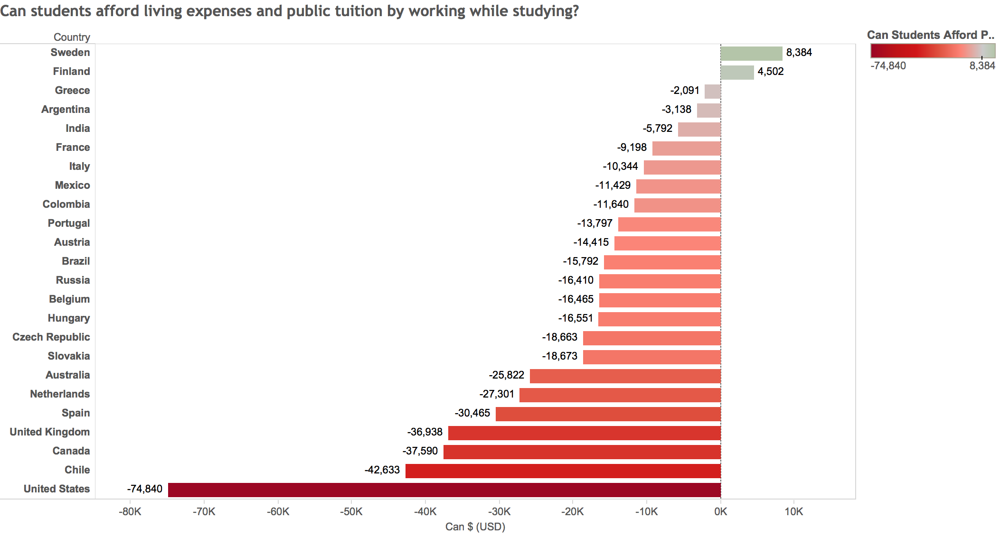
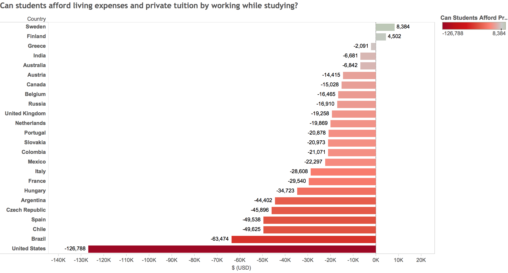
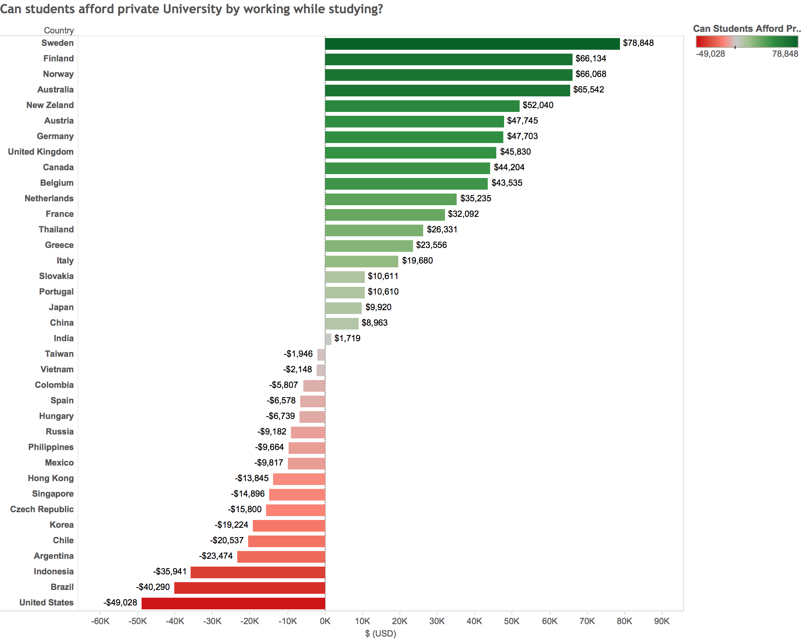

In most countries in the world, students simply cannot afford to pay for their living expenses and their University tuition by working while in school. The ability to get a higher education is still strictly dependent on their family – now more than ever.
If you are born to supportive, middle-class parents that worked hard to save for your education – you have won the education lottery. In most countries, the money that your hypothetical parents have saved will be able to cover your tuition costs and some living expenses. If your parents provide you with food and a place to live, then, in most cases, you already have almost enough saved to get a University degree. You can take on a part-time job, for minimum wage, while studying and pay off the missing difference.
However, if you don't have anyone to rely on at all, you are left at the mercy of loan officers and at government funded programs – if your country has them.
It is very hard to make it completely on your own. Even with grit, hard-work and plenty of dedication, a student with no support will have a difficult time getting a University degree, in most countries.
Can students afford living and tuition costs by working while in school?
Let's say you had to live alone, provide for your basic living expenses and also pay money to your University every year. Is it possible for you to cover all of your expenses by working at minimum wage?
In most counties, working while studying won't help you cover all of your tuition and basic living expenses.
As a student you would have 3 summer breaks where you can work full time during a 4 years program. You can also, with a lot of dedication, pull off a 20 hour work week during the school year. Taking this into account, we calculated how much money you would still have to make on top of your minimum wage job to afford living and education.
Getting a well paying job isn't always the option for most students, because employers want you to have a degree before they hire you. The extra money will have to come from somewhere – loans, scholarships, generous family members or by taking time off between high school and University to save up.
Paying for public University tuition and basic living expenses:

As a student, it is only possible for you to support yourself and pay off your University tuition if you were studying in Sweden and Finland. Both of the countries have free University education, high low-skilled monthly wages and minimum wages.
In the 22 countries we studied, you will have to find alternative sources to help fund your education and living costs.
If you are a student in the United States, you will need to find $74,840 in alternative funding to support yourself for 4 years and to pay for your tuition.
This would explain why – "About 40 million Americans have student loans and about 70% of bachelor’s degree recipients graduate with debt" – MarketWatch
The average debt per students of the 2015 graduating class in the United States is $35,051.
Students that want to study in a public University in the US will need to somehow find $74,840 to support themselves and afford University. If an American student works part-time during school and full-time during the summer, at a minimum wage job, they will only be able to make $46,000.
The United States is the worst for it's lack of affordable education if you look at the savings required to get a University degree. However, other developed counties are not far behind. The average student in Canada graduates with $21,8886 in student debt and with $20,900 in Australia. Surprisingly, English students on average owe $64,600 – the most when compared to the US, Canada and Australia.
Paying for private University tuition and basic living expenses:

Taking a look at private University education, we can see an even bigger difference between the United Stated and every other country we studied. You will need 2 times more money to go to private school in the US, than the 2nd "most expensive" country Brazil.
Can students pay for only their tuition while studying?
We know that in most countries you won't be able to afford both your living expenses and tuition by working part-time during the school year and full-time during the summer.
Can you at least afford just tuition by working a total of 5020 hours at minimum wage?
In 83% of the countries you can pay off your public University degree by working while studying.
The only thing you need is: supportive parents. You don't need your parents to hustle away at your education fund. You just need them to keep a roof over your head close to a University and to feed you. The rest you can do on your own.
This would again explain why students are more likely to live with their parents now then ever before. 42% of Canadians under the age of 30 still live with their parents - that is up 15% from 1981. In the United States, the amount of 18 to 34 year olds living with their parents was 31.5% in 2015. This percentage continuously increased from 27% in 2005.
Living with parents not only helps students afford to go to University, but also helps them pay off their student loans after graduation.
Paying off public University tuition while studying

You can even pay off public University tuition while studying in the United States. The only countries you may struggle a little bit are the Philippines, Russia, Hong Kong and Chile – most likely because the minimum wage remains low.
Paying off private University tuition while studying:

It is impossible to save for private education while studying in almost half of the countries. Private Universities are the least financially attainable in the United States.
Looking at exactly how much students have to save up or the amount of cash they need to borrow should make you stop and think. Education is much harder to attain without family support – now more then ever before. This will have a huge impact on our society. Students that graduate with debt will take longer to get up on their own two feet. They will continue living with their parents and potentially diving into their parents retirement savings while looking for support. The new generation of graduates will have a harder time saving up for a home, taking care of their aging parents and overall contributing back to society.
Getting a University degree is still not readily available to everyone – even though almost every well paying job requires a University degree. Higher education largely remains a luxury and will require a student from a lower class family to work extremely hard and to fall financially behind.
There's more!
- The outrageous cost of University tuition in 40 countries
- Scrape and clean data automatically for visualizing in Tableau